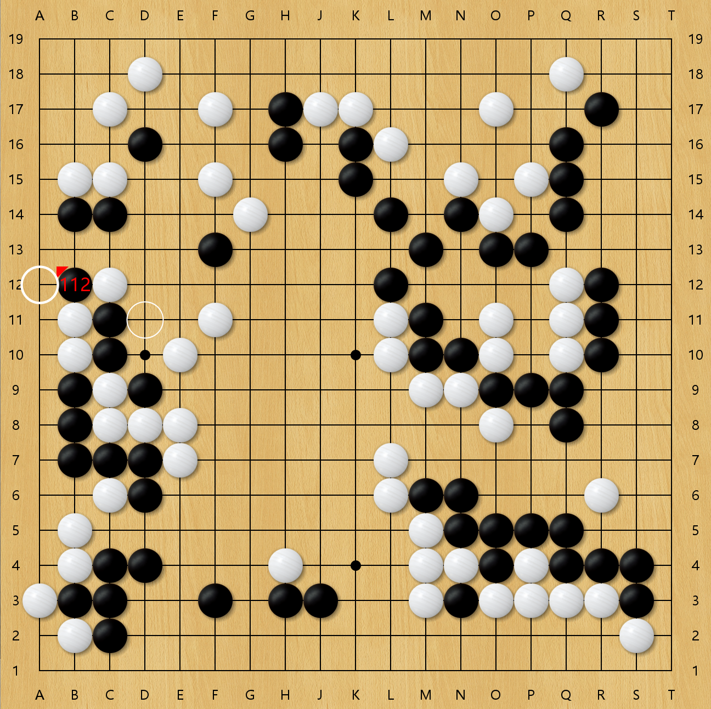
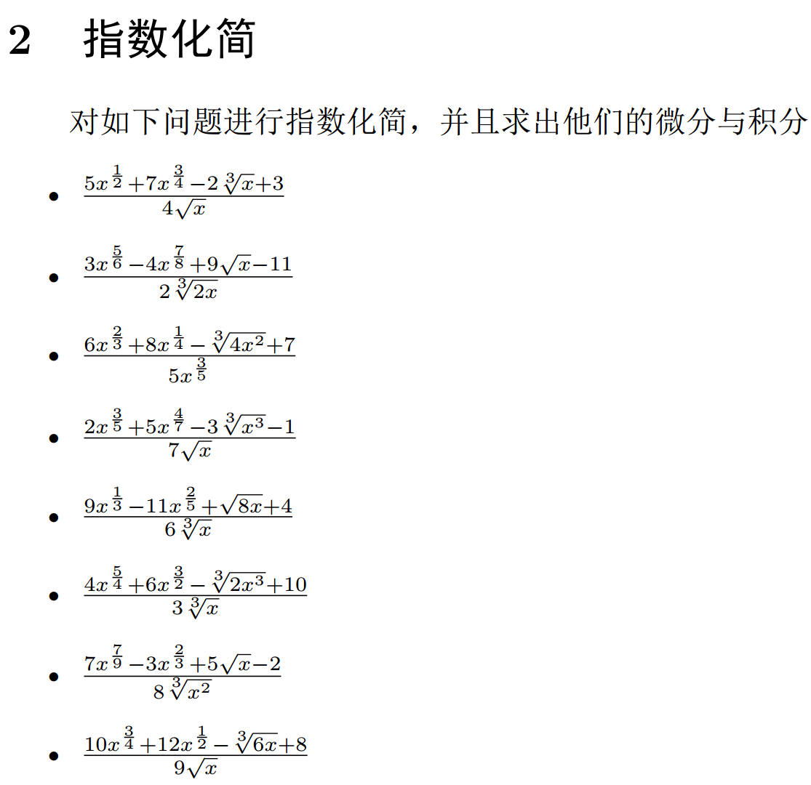
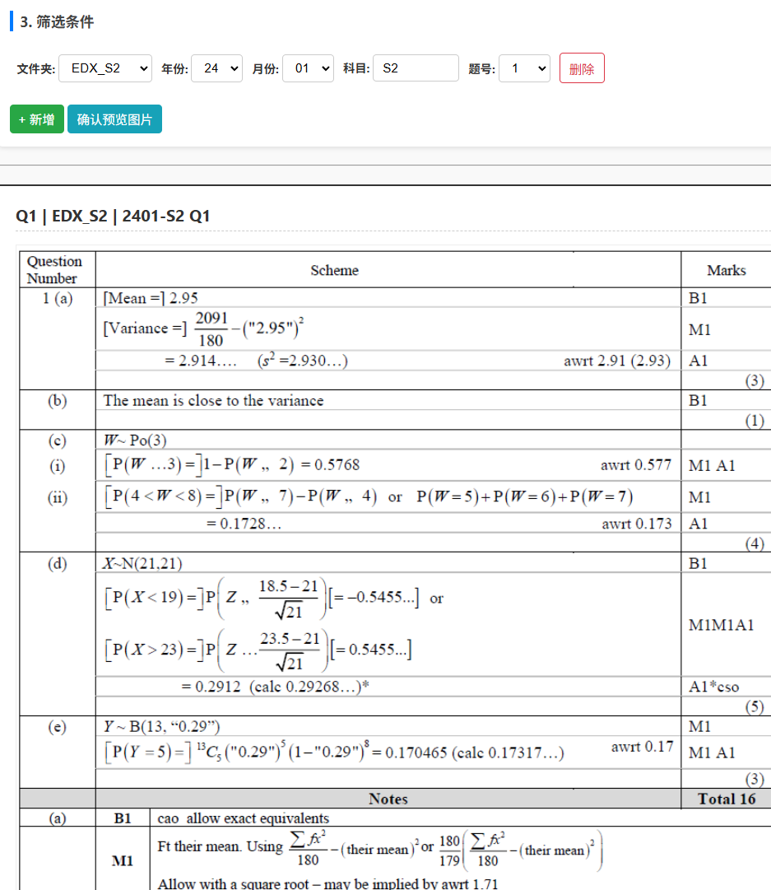
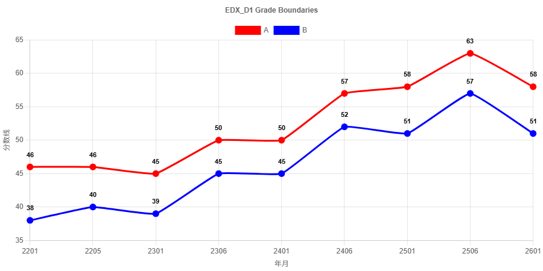

你好！我是一名深耕于国际教育的专业人士。 拥有扎实的学术背景与丰富的行业经验，致力于将复杂的数学课程简单化，创造一个草履虫都能听懂的课堂。 同时，我也关注教会学生课本上的数学技术是如何变现或者如何在面试中被考察的。我坚信，数学是一门教会学生如何赚钱、实现阶级跨越的学科。
Hello! I am a professional Math teacherdeeply engaged in international education. With a solid academic background and rich industry experience, I am committed to simplifying complex mathematics courses and creating a classroom that even a paramecium can understand. At the same time, I also focus on teaching students how the mathematical techniques in textbooks are monetized or assessed in interviews. I firmly believe that mathematics is a discipline that teaches students how to make money and achieve social mobility.


